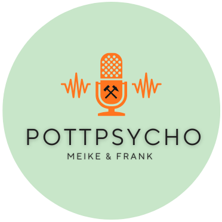
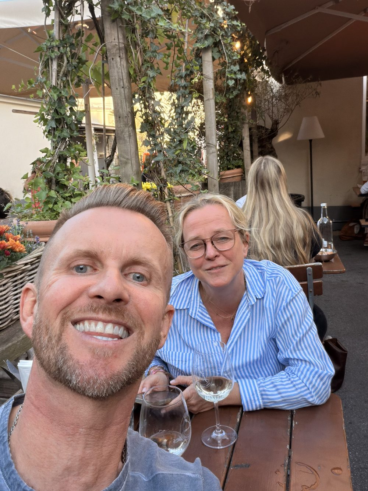

Reden wir Klartext
über die Psyche.
Meike ist Therapeutin, Frank war ihr Patient – aus der Therapie ist eine Freundschaft geworden. Jetzt sprechen die beiden offen über psychische Erkrankungen, ihre eigenen Erfahrungen und Wege da raus. Ehrlich, einfühlsam und mit einer gesunden Portion Humor.

Meike & Frank
Eine Therapeutin, ihr ehemaliger Patient – und eine Freundschaft, die zum Podcast wurde.

Meike Liesen
Dipl.-Psych. & VerhaltenstherapeutinMeike ist Diplom-Psychologin und hat Verhaltenstherapie an der Universität Münster studiert. Zusatzausbildungen in Schematherapie, EMDR, Tanztherapie und Sexualtherapie ergänzen ihr fachliches Handwerkszeug. Bei Pottpsycho bringt sie ihr Fachwissen ein – und erzählt genauso offen aus ihrer eigenen Erfahrung.
Frank Schütze
Ehemaliger Patient & FreundFrank war einst Patient bei Meike – aus der Therapie ist mit der Zeit eine echte Freundschaft geworden. Hauptberuflich arbeitet er im Vertrieb eines Software-Unternehmens, gelernt hat er Krankenkassenbetriebswirt. Im Podcast teilt er ganz persönlich, wie sich psychische Erkrankung und der Weg da raus für ihn angefühlt haben.
Aufklären. Verstehen. Einen Weg zeigen.
Pottpsycho will psychische Erkrankungen greifbar machen – ohne die sonst so häufige bleierne Schwere, aber mit aller nötigen Ernsthaftigkeit und viel Empathie.
Aufklären
Fundiertes Wissen aus der Praxis, verständlich erzählt – damit psychische Erkrankungen kein Tabu bleiben.
Verständnis wecken
Persönliche Geschichten, Erinnerungen und ein ehrliches „Wie war das bei dir?" schaffen Nähe statt Distanz.
Wege zeigen
Aus eigener Erfahrung – als Therapeutin und als ehemaliger Patient – zeigen Meike & Frank, dass es einen Weg da raus gibt.
Die letzten Aufnahmen
Immer aktuell direkt aus Spotify – neue Folgen erscheinen hier automatisch.
Was gerade läuft
Ankündigungen, Behind-the-Scenes und alles, was sonst noch bei Pottpsycho passiert.
Lade News …
Häufige Fragen
Die wichtigsten Antworten rund um Pottpsycho, kurz und knapp.
Lade Fragen …
Wo ihr uns findet
Ob beim Kochen, Pendeln oder Feierabend – Pottpsycho läuft auf allen gängigen Plattformen.
Platzhalter-Links – bitte durch eure echten Profil-URLs ersetzen.
Kein Ersatz für professionelle Hilfe
Pottpsycho ist ein Gesprächsformat rund um psychisches Wohlbefinden. Auch wenn Meike als Dipl.-Psychologin fundiertes Fachwissen einbringt, ersetzen die Inhalte dieses Podcasts keine individuelle ärztliche, psychotherapeutische oder psychiatrische Behandlung, Diagnose oder Beratung. Was wir besprechen, sind allgemeine Einblicke und Perspektiven – kein persönliches Gutachten zu eurer individuellen Situation, das eine Fachperson nur nach einem persönlichen Gespräch geben kann.
Falls ihr selbst psychisch belastet seid oder Unterstützung braucht, wendet euch bitte an eine Fachperson oder eine der folgenden Anlaufstellen. Ihr seid mit euren Themen nicht allein – zögert nicht, euch Hilfe zu holen.
Akute Krise / Suizidgedanken
📞 0800 111 0 111 📞 0800 111 0 222Kostenlos, anonym, rund um die Uhr. Auch per Chat/Mail: online.telefonseelsorge.de
Notruf
🚨 112Schreibt uns
Feedback, Themenwünsche oder einfach mal Hallo sagen – wir freuen uns über jede Nachricht.